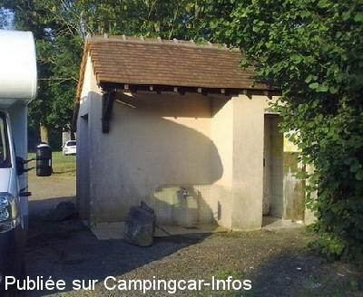

ASN = Aire de services avec stationnement nuit possible de :
COULANS SUR GÉE
(N° 722)
Accès/adresse :
Rue Nationale
72550 COULANS SUR GÉE
72550 COULANS SUR GÉE
Latitude : (Nord) 48.0214° Décimaux ou 48° 1′ 17′′
Longitude : (Est) 0.01508° Décimaux ou 0° 0′ 54′′
Tarif : Gratuit
Type de borne : Autre
Services :


Autres informations :
6 emplacements
Vidanges eaux usées sur dalle béton
Eaux noires dans local WC

Le 05/02/2012 par philr-072010
Le 26/02/2007 par Jaak de Muelenaere
de
Eve
le 15/06/2015 :
Je confirme, lors de notre passage, WC vandalisés, dommage,accessible et proche du village.
Pour un passage cet endroit peut dépanner.
Je confirme, lors de notre passage, WC vandalisés, dommage,accessible et proche du village.
Pour un passage cet endroit peut dépanner.